# Quality of Experience ## Jak mierzyć jakość doświadczaną przez widza? Mikołaj Leszczuk <p class="small">Materiały źródłowe: Mikołaj Leszczuk, Zdzisław Papir, Lucjan Janowski, Jakub Nawała.</p> --- ## Plan wykładu 1. Od parametrów sieci do doświadczenia widza 2. Eksperymenty subiektywne i interpretacja ocen 3. Wskaźniki automatyczne i modele jakości 4. Zastosowania: od laboratorium po monitoring usług --- ## Dlaczego dostawca mierzy jakość? **OTT (Over-the-Top)** to dostarczanie usługi wideo przez internet niezależnie od operatora dostępu. Serwis OTT może oferować transmisje na żywo i materiały na żądanie. Dostawca usługi nie kontroluje całej drogi do odbiorcy. Widz może jednak zrezygnować z usługi, gdy odtwarzanie regularnie zawodzi. Konkurencja między dostawcami i zmieniające się sposoby korzystania z mediów sprawiają, że sam pomiar parametrów sieci nie wystarcza. --- ## Zanim wideo na żądanie stało się codziennością W 1994 r. Thomas Miki wiązał przetrwanie dostawców z wydajnością, niezawodnością i elastycznością. W 1995 r. Daniel Minoli opisywał rywalizację operatorów, sieci kablowych i dostawców internetu, wskazując wideo jako motor rozbudowy infrastruktury. --- ## Jak prognozowano wzrost ruchu wideo? <div class="columns"><div> Cisco w 2018 r. prognozowało na lata 2017-2022: - ok. trzykrotny wzrost całego ruchu IP, - udział wideo w ruchu IP na poziomie 82% w 2022 r., - siedmiokrotny wzrost ruchu z monitoringu wideo. </div><div>  </div></div> <p class="small">To prognozy z raportu Cisco Visual Networking Index, nie pomiary z 2022 r.</p> --- ## Prognoza ruchu na użytkownika <div class="columns"><div> Cisco prognozowało wzrost z **28,8 GB** w 2017 r. do **84,6 GB miesięcznie** w 2022 r., czyli o ok. 194%. Wykres dotyczy całkowitego ruchu na użytkownika stacjonarnego internetu konsumenckiego, nie samego wysyłania. </div><div>  </div></div> --- ## Co umożliwia dostarczanie wideo? - **Dostęp do sieci:** łącza przewodowe i bezprzewodowe w domu, w pracy i w podróży. - **Kodowanie i adaptacja:** warianty materiału o różnych przepływnościach. - **CDN (Content Delivery Network):** rozproszona sieć dostarczania treści. Przepływność wysyłania jest ważna także dla transmisji tworzonych przez samych użytkowników. --- ## Technologie i miejsca odbioru | Obszar | Przykłady ze źródłowego wykładu | | :--- | :--- | | Sieć szkieletowa i dostęp | Zwielokrotnianie długości fal (WDM), gigabitowy Ethernet, sieci światłowodowe, kablowe i telefoniczne | | Dostęp lokalny | Wi-Fi, łączność przez przewody energetyczne (PLC), łączność ultraszerokopasmowa (UWB) | | Odbiorniki | Telewizory o różnej rozdzielczości, komputery i urządzenia mobilne | --- ## Co zmienia przepływność wysyłania? - Relacje i materiały tworzone przez odbiorców, w tym dziennikarstwo obywatelskie. - Współtworzenie encyklopedii i udostępnianie zdjęć. - Personalizacja treści oraz wstawianie reklam po stronie dostawcy to odrębne możliwości cyfrowego dostarczania mediów. --- ## QoS a QoE <div class="columns"><div> **QoS (Quality of Service)** Techniczna jakość usługi. Przykładowe miary sieciowe: przepływność, opóźnienie i utrata pakietów. </div><div> **QoE (Quality of Experience)** Jakość doświadczana przez użytkownika: na ile usługa spełnia jego oczekiwania w danej sytuacji. </div></div> Ten sam parametr może mieć inne znaczenie w wideorozmowie i w filmie odtwarzanym z bufora. --- ## Głos, wideo i dane: inne wymagania | Usługa | Co ma znaczenie? | | :--- | :--- | | Rozmowa | Niskie opóźnienie i małe wahania czasu dostarczania | | Strumień wideo | Przepływność pozwalająca uzupełniać bufor oraz mało przerw | | Pobieranie pliku | Czas zakończenia i poprawność danych | Przepływność, opóźnienie i straty warto analizować w odniesieniu do konkretnej usługi. --- ## Dwie definicje jakości doświadczanej <div class="columns"><div> **QUALINET** Stopień zadowolenia lub irytacji zależy od tego, jak usługa spełnia oczekiwania wobec użyteczności i satysfakcji, przy aktualnych preferencjach odbiorcy. </div><div> **Möller i Raake** Ocena dotyczy też potrzeb odbiorcy, przydatności lub przyjemności oraz kontekstu, cech osoby i jej aktualnego stanu. </div></div> <p class="small"><a href="https://doi.org/10.1007/978-3-319-02681-7">Quality of Experience: Advanced Concepts, Applications and Methods</a>.</p> --- ## Źródła definicji <div class="columns"><div> <p>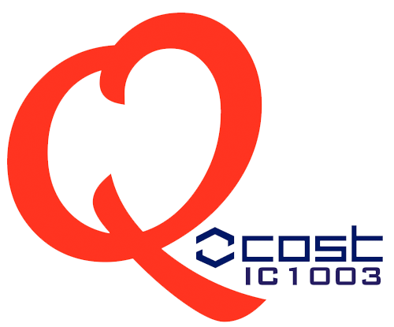</p> </div><div> <p>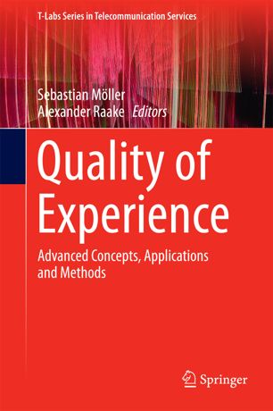</p> </div></div> <p class="small">W badaniach jakości wideo działa też Video Quality Experts Group (VQEG).</p> --- ## Od jakości sieci do jakości odbieranej <p>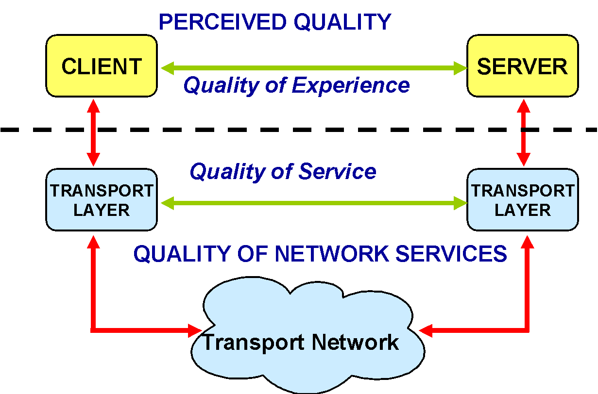</p> --- ## Co wchodzi do oceny usługi? <p>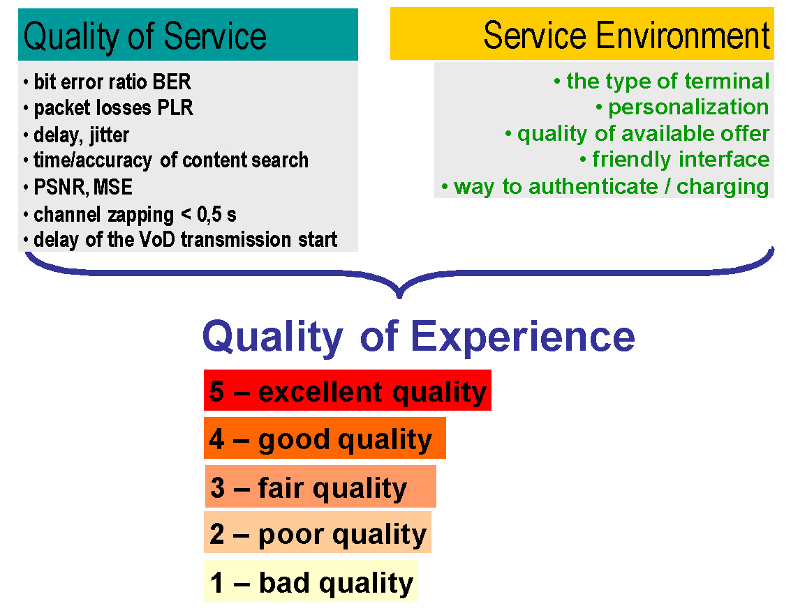</p> <p class="small">Ilustracja pokazuje możliwą skalę ocen; sposób pomiaru zależy od zadania i projektu badania.</p> --- ## Co poza siecią wpływa na QoE? | Czynnik | Przykład | | :--- | :--- | | Treść | Ruch w kadrze, drobny tekst | | Dostarczanie | Czas startu, zmiany jakości, przerwy | | Użyteczność i interakcja | Napisy, wyszukiwanie, sterowanie odtwarzaczem | | Model biznesowy | Reklamy i oczekiwania wobec płatnej usługi | Liczą się też ekran, warunki oglądania i zadanie widza. --- ## Jakość na końcu łańcucha <div class="columns"><div> W środowisku OTT dostawcy rywalizują o odbiorcę. Żeby ustalić, czy problem może skłonić go do odejścia, trzeba wiedzieć, co faktycznie dotarło do jego urządzenia i jak zostało odtworzone. </div><div>  <p class="small">VIA Gallery, <a href="https://commons.wikimedia.org/w/index.php?curid=38934022">Wikimedia Commons</a>, CC BY 2.0.</p> </div></div> --- ## Wideo: ostrość czy ciągłość? Ten sam film i ten sam spadek przepływności. Bufor pozwala przez chwilę odtwarzać film dalej.  Jeśli segment o niższej przepływności dotrze na czas, nie będzie przerwy. Co ważniejsze: płynność sceny czy czytelność tekstu? --- ## Skąd wiadomo, co przeszkadza? Przygotowujemy **eksperyment subiektywny**: uczestnicy oglądają próbki w ustalonych warunkach i oceniają ich jakość. Kontrolujemy treść, rodzaj zakłóceń i warunki oglądania. Oceny stanowią punkt odniesienia do porównań i kalibracji modeli. W działającej usłudze trudno zebrać oceny bez przerywania korzystania. Kontrolowany test pozwala oddzielić wpływ zakłócenia od sytuacji, w której widz używa usługi. --- ## Skąd dane do kalibracji? <div class="columns"><div> Potrzebne są oceny wielu treści, poziomów jakości i osób. Rozbudowane badania mogą zbierać setki lub tysiące ocen. Nie jest to uniwersalny próg. Warunki oglądania należy utrzymać porównywalne lub celowo uwzględnić ich zmianę w projekcie. </div><div>  </div></div> --- ## Eksperyment jako pętla <p>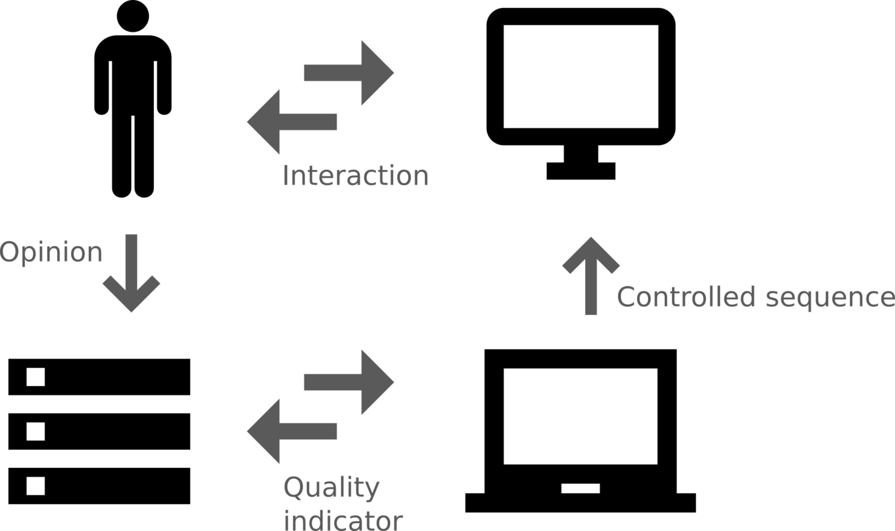</p> <p class="small">Opinia widza jest wynikiem eksperymentu. Wskaźnik automatyczny można z nią porównać.</p> --- ## Co kontrolujemy w teście? <div style="display:grid;grid-template-columns:repeat(3,minmax(0,1fr));gap:0.5em;text-align:center"> <div><strong>Opinia</strong><br>Ocena widza</div> <div><strong>Zniekształcenie</strong><br>Kontrolowany sygnał</div> <div><strong>Zadanie</strong><br>Ustalony sposób użycia</div> </div> --- ## Od materiału źródłowego do ocen <div class="packet-layout" style="display:grid;grid-template-columns:repeat(4,minmax(0,1fr));gap:0.7em;text-align:center"> <div><strong>1. Źródło</strong><br>Scena bez badanej degradacji</div> <div><strong>2. Warunek</strong><br>Kodowanie, straty lub przerwy</div> <div><strong>3. Próbka</strong><br>Wideo po przetworzeniu</div> <div><strong>4. Oceny</strong><br>Odpowiedzi uczestników</div> </div> W dokumentacji spotkasz skróty **SRC** (materiał źródłowy), **HRC** (warunek przetwarzania) i **PVS** (przetworzona sekwencja wideo). --- ## Warunki odsłuchu i oglądania - Ustalić parametry ekranu, odległość, oświetlenie i głośność. - Przygotować różne treści i reprezentatywne poziomy jakości. - Ujednolić instrukcję i trening; zaplanować kolejność próbek. Wynik odpowiada zadaniu i warunkom testu. Ocena czytelności tablicy rejestracyjnej to inne zadanie niż ocena komfortu oglądania filmu. --- ## Stanowisko do testów wideo <p>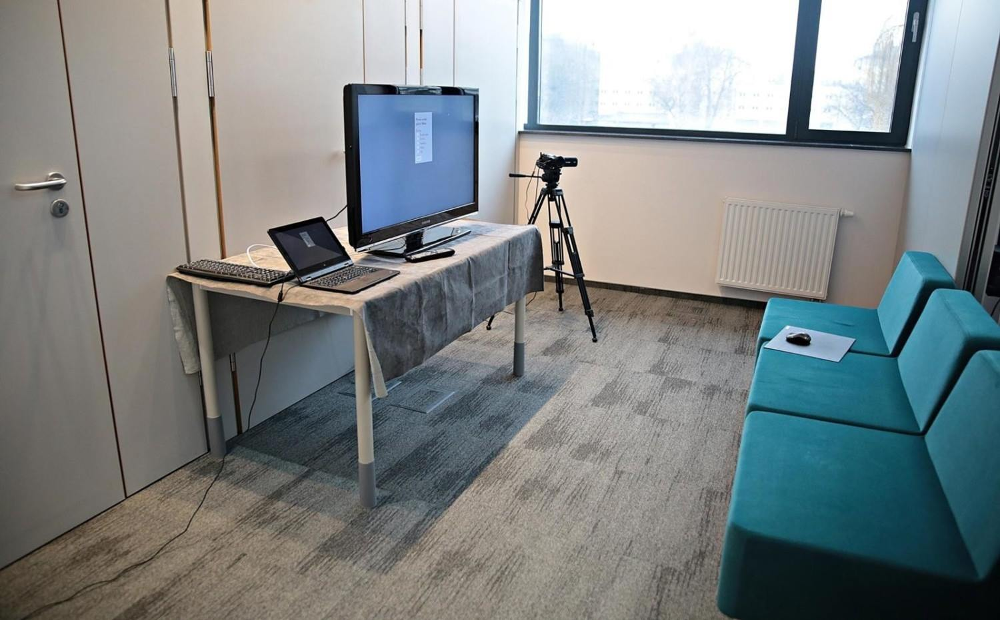</p> <p class="small">Archiwalne stanowisko AGH. Stałe ustawienie ekranu i miejsca uczestnika ułatwia porównywanie ocen.</p> --- ## Laboratorium QoE AGH: infrastruktura <div class="columns"><div> <p>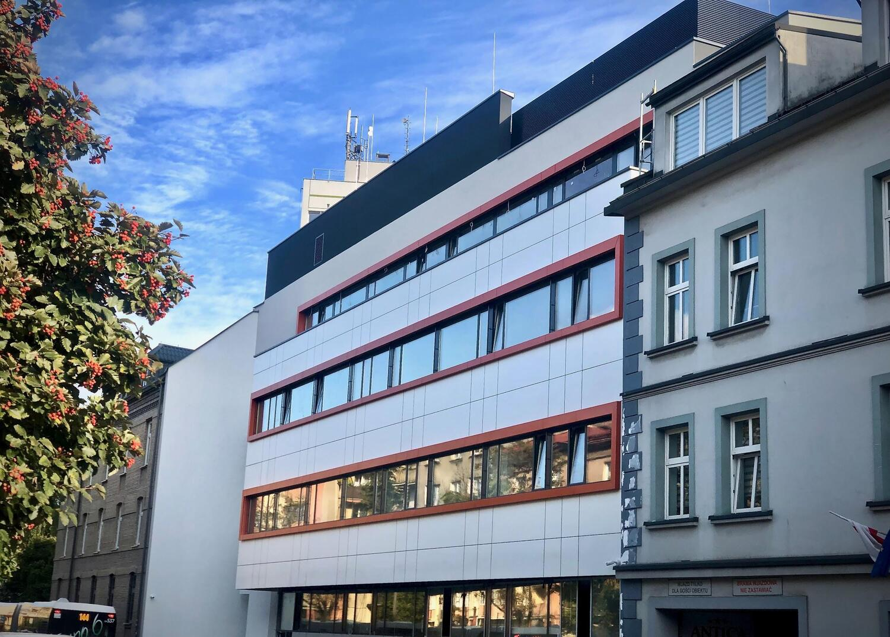</p> </div><div> <p>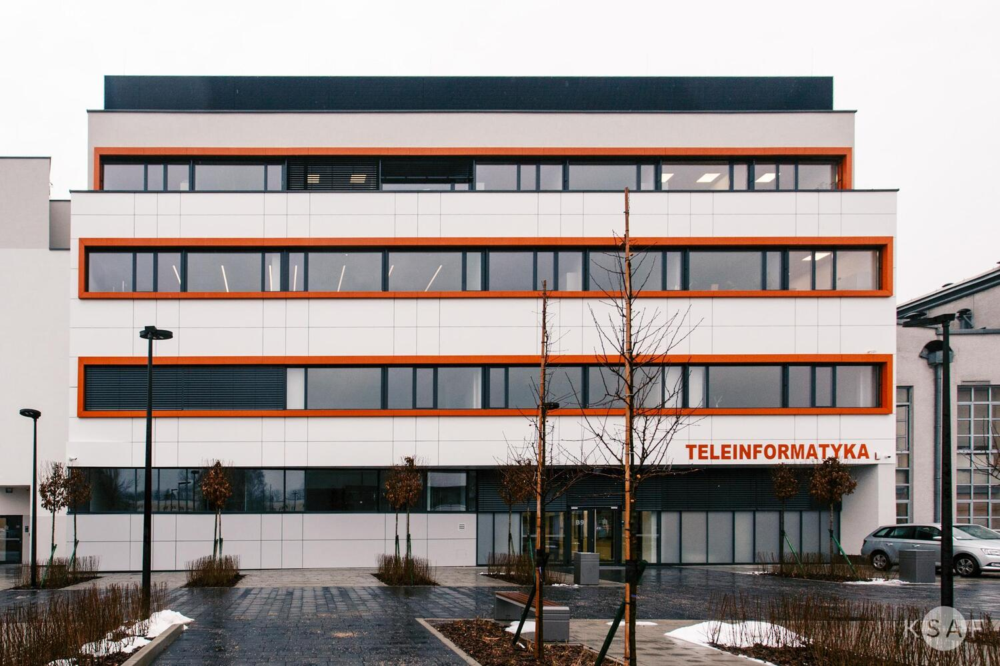</p> </div></div> --- ## Laboratorium QoE AGH: wnętrze i plan <div class="columns"><div> <p>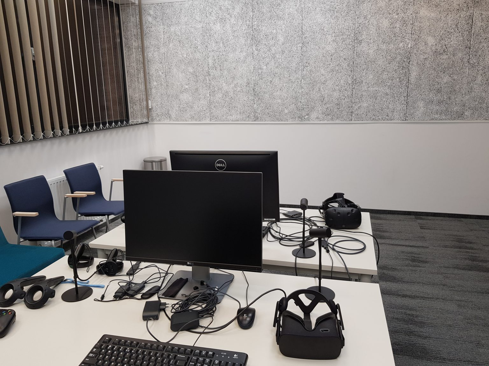</p> </div><div> <p>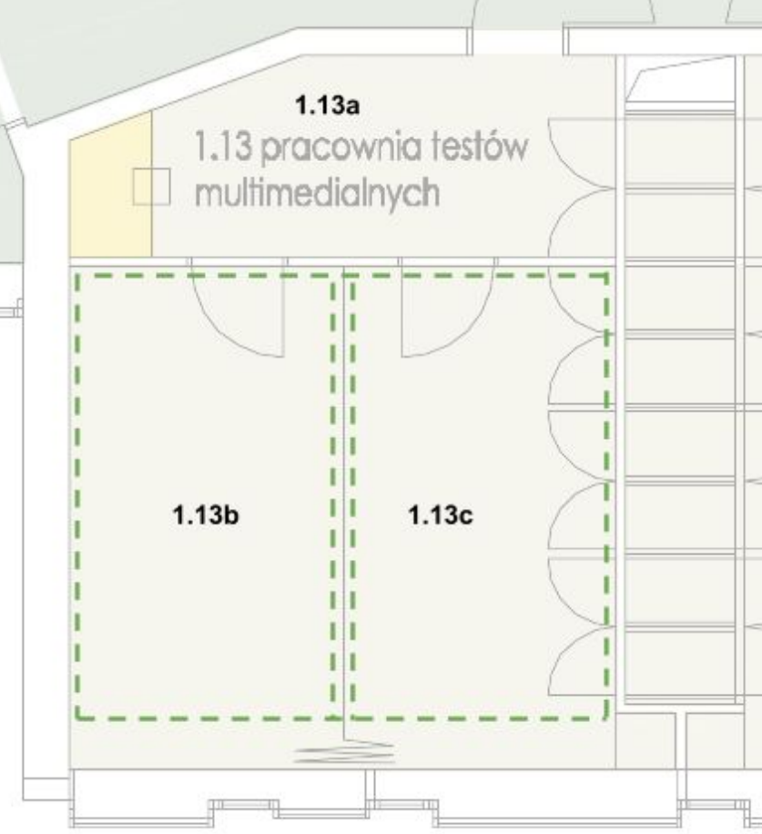</p> </div></div> --- ## ACR: ocena pojedynczej próbki **ACR (Absolute Category Rating):** każdą próbkę ocenia się oddzielnie na skali kategorii. | Wartość | 1 | 2 | 3 | 4 | 5 | | :--- | :--- | :--- | :--- | :--- | :--- | | Jakość | Zła | Słaba | Dostateczna | Dobra | Doskonała | Sesja treningowa oswaja uczestników z zadaniem. Właściwe oceny zbiera się osobno. --- ## ACR: kolejność w sesji Uczestnik ocenia każdą próbkę po zakończeniu odtwarzania, przed pokazaniem następnej. --- ## MOS: średnia z ocen **MOS (Mean Opinion Score)** to średnia ocen zebranych dla danej próbki lub warunku. Przykład: **3, 4, 4, 5, 4** daje **MOS = 4,0**. Ta sama średnia może wynikać z bardzo różnych rozkładów. Warto pokazać też liczebność próby, rozrzut lub przedział ufności. --- ## Średnia, mediana i dominanta <div class="columns"><div> Średnie można liczyć dla próbki, warunku przetwarzania lub uczestnika, ale każda z nich odpowiada na inne pytanie. Mediana to wartość środkowa, dominanta to wartość najczęstsza. W rozkładach skośnych mogą różnić się od średniej. </div><div>  <p class="small">Cmglee, <a href="https://commons.wikimedia.org/w/index.php?curid=15147460">Wikimedia Commons</a>, CC BY-SA 3.0.</p> </div></div> --- ## Czy przerwa przeszkadza jednakowo? Ci sami widzowie oceniają dwie sceny: każdą bez przerwy i z przerwą. | Przykładowy MOS | Bez przerwy | Z przerwą | | :--- | ---: | ---: | | Scena spokojna | 4,4 | 3,8 | | Scena dynamiczna | 4,4 | 3,0 | W przykładzie spadek średniej jest większy dla sceny dynamicznej. Czy da się to uogólnić? Potrzebujemy więcej treści oraz różnic ocen poszczególnych widzów. --- ## Porównywanie wyników Uczestnicy różnie korzystają ze skali. Zanim porównasz średnie, obejrzyj rozkład ocen i sprawdź, czy oceny są sparowane. **Test t-Studenta** może służyć do porównania średnich, gdy odpowiada projektowi badania i spełnione są jego założenia. Sama istotność statystyczna nie mówi, czy różnica jest praktycznie ważna. --- ## Rozkład ocen a test t <div class="columns"><div> Uczestnicy nie zawsze wykorzystują całą skalę. Przy tych samych widzach porównujemy **różnice sparowane**, np. ocenę wersji źródłowej i przetworzonej. Normalny kształt rozkładu wszystkich ocen razem nie sprawdza założeń tego testu. </div><div>  </div></div> --- ## Czy różnica jest odróżnialna od zera? Na przykład: czy widzowie oceniają próbkę na granicy akceptacji inaczej niż źródło? W teście sparowanym sprawdzamy średnią różnicę ocen dla tych samych osób. --- ## Zależność nie musi być liniowa Niewielka poprawa parametru może być niezauważalna przy bardzo dobrej jakości, a wyraźnie odczuwalna w pobliżu progu akceptacji. **Krzywa logistyczna** to jeden ze sposobów dopasowania takiej zależności. Parametry wyznacza się z ocen, a model sprawdza na innych danych. --- ## Krzywa logistyczna: co zmienia jej kształt? <div class="columns"><div> <p class="small"><code>f(x) = a + (L - a) / (1 + exp(-k(x - x₀)))</code></p> - `a`, `L`: dolna i górna asymptota - `x₀`: położenie środka przejścia - `k > 0`: stromość wzrostu <p class="small"><code>exp</code> oznacza funkcję wykładniczą.</p> </div><div>  <p class="small">Qef, <a href="https://commons.wikimedia.org/w/index.php?curid=4310325">Wikimedia Commons</a>, domena publiczna.</p> </div></div> --- ## Pułapki eksperymentu - Jedna irytująca próbka może zmienić sposób oceniania kolejnych. - Zmęczenie i kolejność prezentacji mogą wpłynąć na wynik. - Obserwacji odstających nie usuwa się tylko dlatego, że są niewygodne. Reguły wykluczeń ustala się z góry. Uczestnik może w praktyce ocenić całe doświadczenie udziału, a nie bieżącą próbkę. Dlatego projekt, instrukcja i ograniczenia eksperymentu wpływają na interpretację wyniku. --- ## Co może zmienić odpowiedź widza? <div style="display:grid;grid-template-columns:repeat(4,minmax(0,1fr));gap:0.4em;text-align:center;font-size:0.8em"> <div><strong>Przygotowanie</strong><br>Spójna instrukcja i trening</div> <div><strong>Zakłócenia</strong><br>Ocena całej sesji zamiast próbki</div> <div><strong>Uczestnik</strong><br>Różne sposoby korzystania ze skali</div> <div><strong>Laboratorium</strong><br>Wynik zależy od warunków badania</div> </div> --- ## Jak rozpoznać obserwację odstającą? <div class="columns"><div> Punkt oddalony od grupy to sygnał do sprawdzenia, nie powód do automatycznego usunięcia. Korelacja Pearsona bywa miarą zgodności ocen. Pokazany w archiwum próg 0,75 nie jest ogólną regułą wykluczania uczestników. </div><div>  <p class="small">Osrecki, <a href="https://commons.wikimedia.org/w/index.php?curid=48650484">Wikimedia Commons</a>, CC BY-SA 4.0.</p> </div></div> --- ## Po co automatyczny pomiar? Test z udziałem ludzi pomaga zrozumieć odbiór, ale nie da się go uruchamiać dla każdej sesji. **KPI (Key Performance Indicators)** to kluczowe wskaźniki monitorowania. Przykłady: czas startu, liczba i czas przerw oraz wskaźniki zniekształceń obrazu. --- ## Zalety pomiaru algorytmicznego Pomiar można powtarzać według jednej procedury. Wynik jest liczbowy, łatwy do przetwarzania i da się go włączyć do systemu monitorowania. --- ## Gdzie powstaje zniekształcenie? | Etap | Przykład problemu | | :--- | :--- | | Rejestracja | Nieostrość lub szum | | Przetwarzanie | Artefakty kompresji | | Dostarczanie i odtwarzanie | Braki danych lub przerwy | | Wyświetlanie | Skalowanie i ograniczenia ekranu | Automatyczny wskaźnik może wykryć objaw. Nie zawsze pozwala wskazać etap, na którym powstał problem. --- ## Obraz kontrolny <p>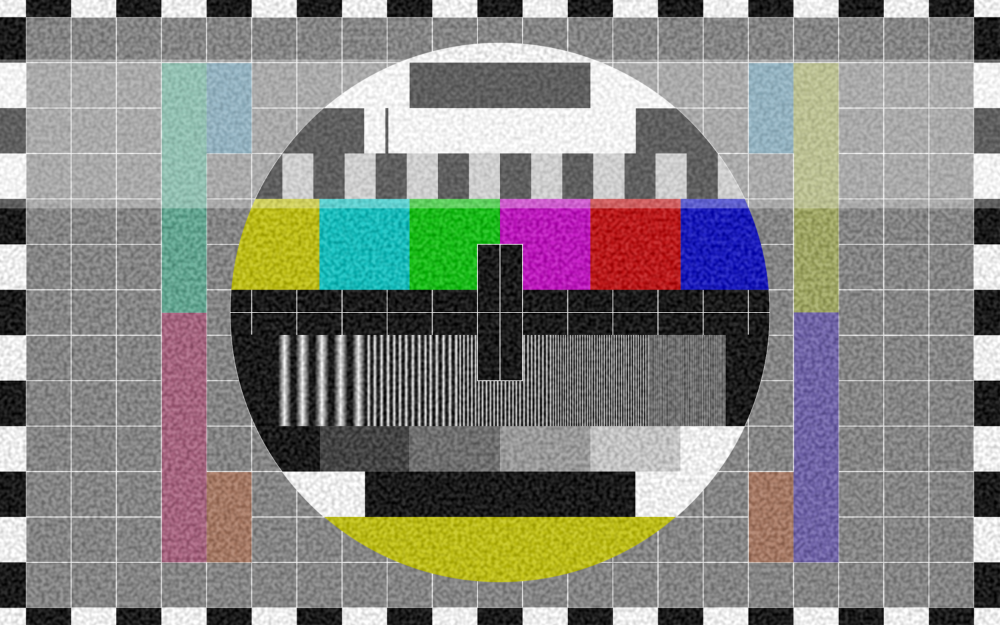</p> Stały wzorzec pozwala porównać to, co dzieje się z kolorem, detalem i geometrią na różnych etapach toru. --- ## Ile wiemy o oryginale? | Metoda | Dane potrzebne do oceny | | :--- | :--- | | Pełna referencja | Oryginał i oceniane wideo | | Ograniczona referencja | Wybrane cechy oryginału i oceniany materiał | | Bez referencji | Tylko oceniany materiał, bez oryginału | Można też analizować **strumień bitowy** zamiast obrazu po dekodowaniu, jeśli dostępne są odpowiednie dane zakodowanego wideo. --- ## Pomiar bez referencji Sondę można umieścić tam, gdzie dostępny jest obraz, nawet bez dostępu do źródła oraz parametrów kodowania i transmisji. Trudność: model ma opisać to, co zauważa ludzki układ wzrokowy, bez bezpośredniego porównania z oryginałem. --- ## Pomiar z pełną referencją <div class="columns"><div> Przy dostępie do źródła można porównać je z przetworzonym obrazem. To przydatne np. przy sprawdzaniu skutków kompresji przez dostawcę treści. Koszt zależy od metody. Porównanie może wymagać dopasowania klatek i znacznych obliczeń. </div><div>  </div></div> --- ## Przykład: pomiar rozmycia **VQI (Video Quality Indicator)** może oszacować widoczne rozmycie na podstawie cech obrazu, np. tego, jak szerokie jest przejście na krawędzi. Bez oryginału nie wiadomo jednak, czy miękka krawędź wynika z usterki, czy była zamierzona. Pojedynczy wskaźnik nie zastępuje oceny całej usługi. --- ## Jak wskaźnik widzi rozmycie? <p>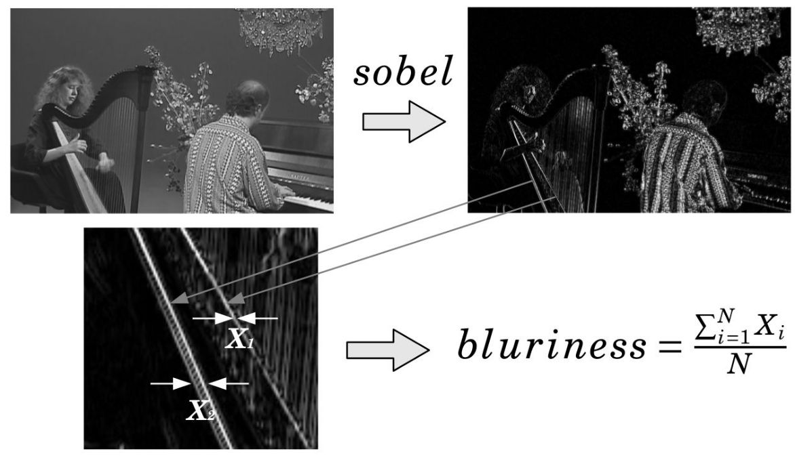</p> <p class="small">Przykład z materiałów AGH: wykrycie krawędzi filtrem Sobela, pomiar ich szerokości i uśrednienie wyników.</p> --- ## Jak powstaje model jakości? 1. Zbierz oceny widzów oraz dane o sygnale i odtwarzaniu. 2. Wybierz cechy i dopasuj model do ocen z eksperymentu. 3. Sprawdź przewidywania na innych treściach i zakłóceniach. Model przewiduje **to, co oceniano w testach**. Jeśli uczestnicy oceniali obraz, wynik nie obejmuje np. użyteczności odtwarzacza ani reakcji na reklamy. --- ## Co wchodzi do modelu i co z niego wychodzi? <div style="display:grid;grid-template-columns:repeat(3,minmax(0,1fr));gap:0.75em;text-align:center;font-size:0.86em"> <div><strong>Dane wejściowe</strong><br>Parametry sieci i cechy pikseli</div> <div><strong>Model jakości</strong><br>Kalibracja na ocenach widzów</div> <div><strong>Wynik</strong><br>Przewidywana ocena jakości</div> </div> Nie każdy model wykorzystuje wszystkie wejścia. Dobieramy je do tego, co możemy zmierzyć i przewidywać. --- ## Od badań AGH do zastosowań Archiwalne materiały AGH opisują zestaw **15 wskaźników jakości wideo zaimplementowanych w C**, w tym wskaźnik rozmycia, oraz prace nad pomiarem bez materiału odniesienia. Zastosowania: diagnostyka usług wideo, porównywanie ustawień kompresji, ocena materiału do konkretnych zadań oraz transfer narzędzi do praktyki. --- ## Jak rozwijano metody na AGH? Zespół przygotowywał eksperymenty zgodnie ze standardami, proponował własne metody badań i analizy wyników oraz przeprowadził liczne testy. Z błędów popełnionych przy testach wyciągał wnioski na przyszłość. <p>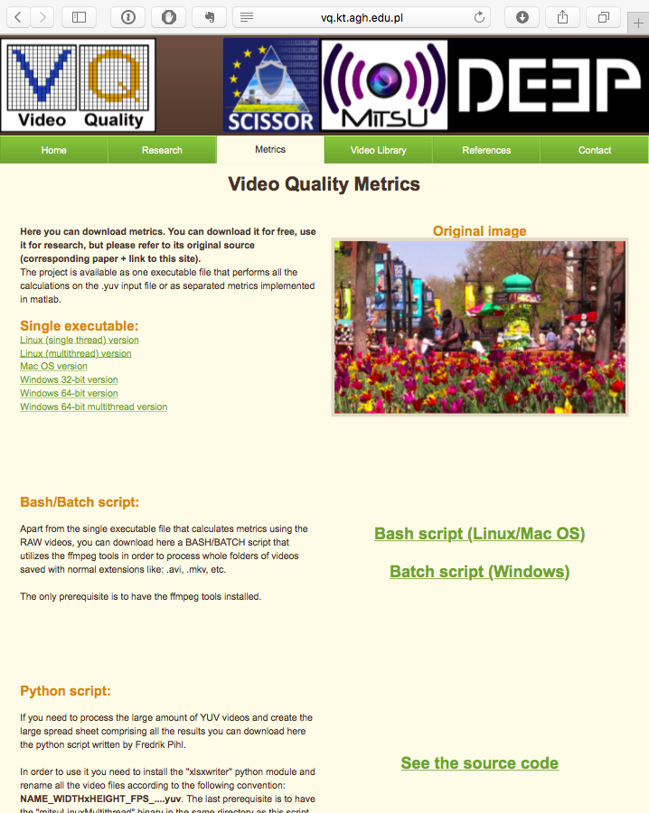</p> <p class="small">Zrzut strony ma charakter historyczny. Nie potwierdza dzisiejszej dostępności plików.</p> --- ## Projekty: instytucje widoczne w archiwum <div style="display:grid;grid-template-columns:repeat(4,minmax(0,1fr));gap:0.45em;align-items:center"> <p>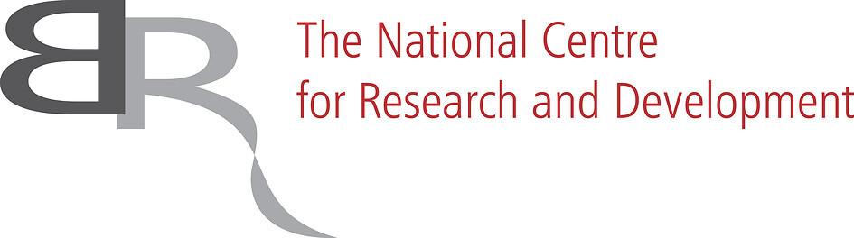</p> <p>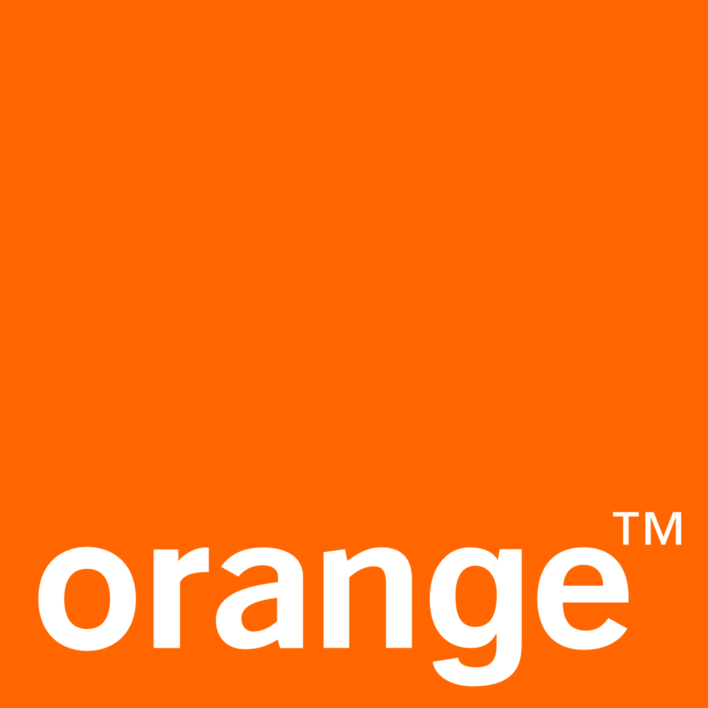</p> <p>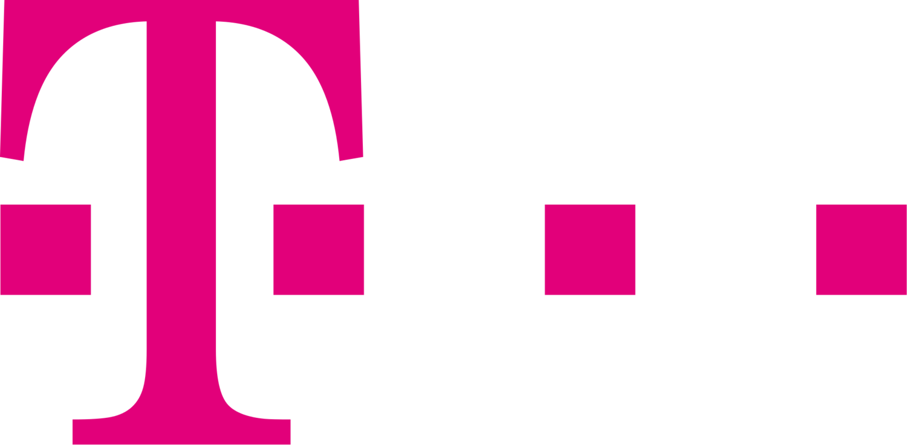</p> <p>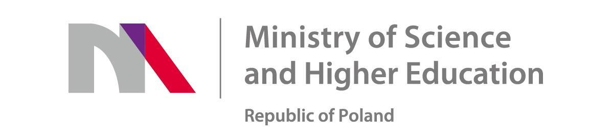</p> </div> <p class="small">Zestaw historyczny z wykładu PT. Nie jest listą obecnych partnerstw.</p> --- ## Współpraca międzynarodowa: ocena wideo <div class="columns"><div> **VQEG (Video Quality Experts Group).** Materiały dokumentują udział od 2008 r., pracę w zarządzie, współprowadzenie projektów z partnerami z Gandawy, Nantes, Rohde & Schwarz i amerykańskiej NTIA oraz współpracę przy przygotowaniu testów. </div><div> **Video Quality in Public Safety.** Materiały odnotowują udział od 2010 r. w inicjatywie wspieranej przez amerykański Departament Bezpieczeństwa Krajowego, m.in. w opracowaniu poradników do zastosowań wideo. </div></div> --- ## Organizacje zajmujące się oceną wideo <div class="columns"><div>  </div><div>  </div></div> --- ## Współpraca: standaryzacja i delegacja <div class="columns"><div> **Ministerstwo Cyfryzacji** <p class="small">Materiały odnotowują nominację do reprezentowania Polski od 2014 r.</p> </div><div> **Międzynarodowy Związek Telekomunikacyjny** <p>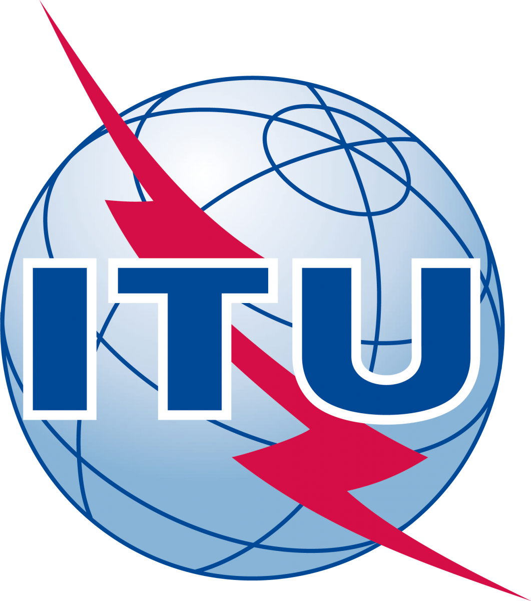</p> <p class="small">Materiały dokumentują udział zespołu w pracach ITU-T od 2014 r.</p> </div></div> --- ## Współpraca i standaryzacja - **VQEG (Video Quality Experts Group):** wspólne badania i porównania metod oceny wideo. - **ITU-T:** sektor normalizacji Międzynarodowego Związku Telekomunikacyjnego. - **P.912:** subiektywna ocena wideo w zadaniach rozpoznawania. - **J.343:** hybrydowe modele oceny percepcyjnej łączące informacje ze strumienia bitowego i przetworzonego wideo. --- ## Przykłady wkładu w zalecenia **P.912:** rozszerzenie opisu materiałów źródłowych, metod testu, projektu eksperymentu oraz warunków odniesienia, oglądania i odsłuchu. **J.343:** wyniki techniczne przedstawione w pracach niezależnej grupy laboratoriów, z angielskiego *Independent Lab Group* (ILG). --- ## Transfer technologii i upowszechnianie W materiałach odnotowano podpisanie umowy licencyjnej w 2013 r. oraz prace nad kolejną. Nie ma tam potwierdzenia, że drugą umowę zawarto. Archiwalny bilans zespołu: blisko 100 publikacji i 100 wystąpień, ponad 10 konferencji lub sesji specjalnych oraz ponad 10 numerów specjalnych czasopism związanych z QoE. Liczby dotyczą okresu opisywanego w źródle. --- ## Od wyniku do decyzji Widzowie zgłaszają, że film się zacina, choć średnia przepływność wygląda dobrze. **Co sprawdzić?** Czas i miejsca przerw, poziom bufora oraz zmiany wariantu. Następnie porównać dwa ustawienia odtwarzacza na tych samych treściach i z udziałem widzów. --- ## Trzy pytania o jakość 1. **Co zmierzyliśmy?** Parametry sieci, sygnału czy sesji odtwarzania? 2. **Co odczuł widz?** Czy usługa pozwoliła wykonać zadanie? 3. **Na czym opiera się wniosek?** Na ocenach ludzi czy na modelu skalibrowanym względem tych ocen? --- ## Nagranie źródłowego wykładu <p class="video-intro">Wersja angielska z AMIPaC (19:18). Osobny materiał do odtworzenia, bez powtarzania części wykładowej.</p> <video controls playsinline preload="metadata" style="max-height:370px"><source src="media/local-replacements/qoe-wyklad.mp4" type="video/mp4" onerror="this.parentElement.hidden=true;this.parentElement.nextElementSibling.hidden=false"></video> <p class="video-original" hidden>Brak lokalnej kopii nagrania. Źródłowy plik MP4 jest w materiałach AMIPaC do wykładu Multimedia Quality of Experience.</p>